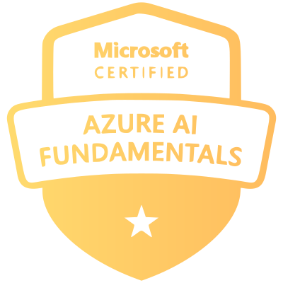
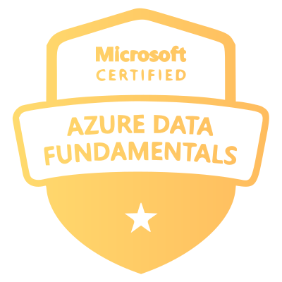

AI Architect
Agents. Context. Decisions.
Build the intelligence layer: orchestration, retrieval, tool use, and control.
- Agent systems
- Context and tool design
- Evaluation and guardrails
- Knowledge and retrieval architecture
- Enterprise AI integration
Two architecture disciplines in direct tension.
Agent systems up front. Durable software underneath.
AI Architect
Build the intelligence layer: orchestration, retrieval, tool use, and control.
Collision Zone
Vijay Nirmal
AI Architect | Software Architect | Technical Lead
Software Architect
Build the system layer: services, frameworks, resilience, and performance.
Experience
8+ Years in architectureSoftware
30+ Frameworks builtSoftware
10+ Solutions designedSoftware
50x Peak speedupLeadership
6+ Teams ledAI
Microsoft Agent Framework Agent orchestrationAI
Azure AI Foundry Enterprise AI stackSoftware
.NET + Azure Platform architecture01 / Dual Practice
From Microsoft Agent Framework and Azure AI Foundry to LangChain, .NET, Node.js, Angular, APIs, and Azure platforms.
AI Architect
Signature move
AI systems that blend Microsoft platform depth with practical orchestration and production governance.
Software Architect
Signature move
Platforms that combine Microsoft strengths with modern web engineering to scale delivery speed and reliability.
Software
Throughput, latency, and cost are design inputs, not cleanup after launch.
AI
Design coordinated multi-step flows across Microsoft Agent Framework and LangChain runtimes.
Software
Reshape brittle data flows to eliminate recurring downtime and preserve delivery continuity.
AI
Shape enterprise AI delivery around evaluation, deployment fit, and operational governance.
Software
Use event-driven design with strong consistency where business workflows cannot tolerate drift.
AI
Connect tools, context, and enterprise systems through protocol-driven orchestration patterns.
Software
Prove architecture direction early, then harden the path that survives real usage.
AI
Use retrieval and knowledge design to ground model responses in current business context.
Software
Shared frameworks and architecture primitives multiply every team's output.
AI
Keep critical decisions observable and reviewable with human-in-the-loop checkpoints.
Software
Upgrade real enterprise systems without forcing wasteful rewrites.
AI
Measure behavior, constrain risk, and harden AI systems before they become operational dependencies.
02 / Developer Depth
Built from the resume's backend, frontend, database, messaging, Azure, DevOps, testing, and container platform experience.
AI
Backend
Frontend
Data
Messaging
Infra
Architecture
System design and solution shaping
Patterns
Design patterns and reusable abstractions
Delivery
Proof-of-concept to production hardening
Quality
Unit Testing and Test Driven Development
Performance
Profiling, optimization, and scale-aware design
Leadership
Technical guidance and cross-team enablement
03 / Experience
The work history is not a list of titles. It is a record of building systems, removing delivery risk, and creating reusable architecture under real product pressure.
Technical Lead
Qualibar
Jul 2025 to present
Technical Lead
Neudesic
May 2022 to Jul 2025
Software Engineer
H&R Block
Jan 2019 to May 2022
Backend
AspNetCore, Node.js, NestJS, Web APIs, Microservices
AI
Microsoft Agent Framework, LangChain, MCP, A2A, OpenAI
Frontend
Angular, HTML, CSS, SCSS, Web Components
Data
SQL Server, MongoDB, CosmosDB, Kafka, RabbitMQ, Service Bus, Event Hub
Cloud
Azure, Kubernetes, AKS, Istio, SignalR, Azure CI/CD
04 / Proof
These are the kinds of outcomes the work optimizes for: shipping AI systems, compounding platform leverage, and raising the technical ceiling of the teams involved.
Production AI
Led the architecture and team delivery for an agentic application built with LangChain and Microsoft Agent Framework.
Platform Leverage
Designed reusable libraries and frameworks that removed repetition and accelerated delivery in both .NET and Node.js environments.
Performance
Improved critical application paths by up to 50x in some cases while also reducing cost and operational friction.
Modernization
Used WASM, Web Components, and hybrid integration patterns to bring modern capabilities into legacy product estates.
Selected Projects
Knowledge Sharing
Microsoft Certifications

Azure AI Fundamentals
Azure Data Fundamentals05 / Profile
This portfolio is meant to show the shape of the work. The details below anchor that work in community, publication, and day-to-day engineering practice.
Coordinates
Profiles
Community
Publication
Blind Vision
Co-authored a 2020 paper on 3D audio feedback for visually impaired navigation using Python, OpenCV, IoT, and Raspberry Pi.
Amrita Vishwa Vidyapeetham
B.Tech. Computer Science, Jun 2015 to Apr 2019 | CGPA 8.11 | Graduated with distinction.